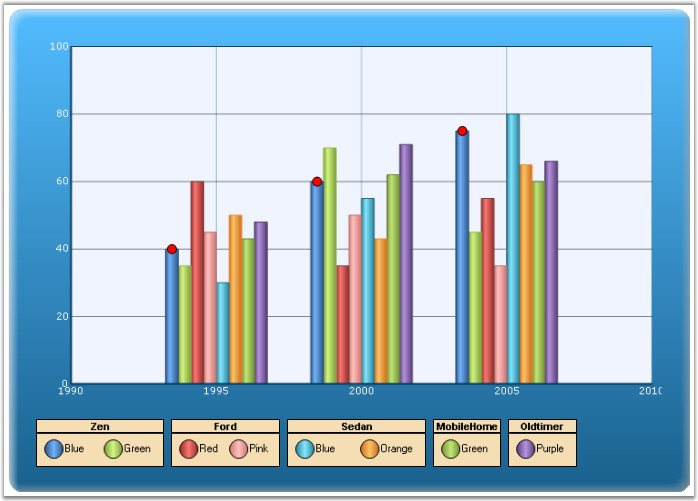

The legend is represented by the ChartLegend type.
Default Legend
By default, a custom ChartLegend instance gets added to the Legends list in the control. You can access this default legend as follows.
|
[C#]
// Changing the position of the default legend this.ChartWebControl1.Legends[0].LegendPosition = Syncfusion.Windows.Forms.Chart.ChartDock.Top; |
|
[VB.NET]
' Changing the position of the default legend Me.ChartWebControl1.Legends[0].LegendPosition = Syncfusion.Windows.Forms.Chart.ChartDock.Top |
Adding Custom Legends
You can add custom legends to the chart through the Legends list as follows:
|
[C#]
ChartWebLegend legend1 = new ChartWebLegend(ChartWebControl1); legend1.Name = "legend1"; legend1.Text = "Zen"; legend1.Position = ChartDock.Bottom; ChartWebControl1.Legends.Add(legend1); |
|
[VB.NET]
Dim legend1 As New ChartWebLegend(ChartWebControl1) legend1.Name = "legend1" legend1.Text = "Zen" legend1.Position = ChartDock.Bottom ChartWebControl1.Legends.Add(legend1) |
You can then add custom legend items into the ChartLegend through the CustomItems property as explained in the next topic (ChartLegendItem).
You can also associate a Chart Series to a custom ChartLegend as follows (then the legend item corresponding to that series will be rendered within the specified legend):
|
[C#]
// Associate legend1 with series1 series[0].LegendName = "legend1"; // Associate legend2 with series2 series[1].LegendName = "legend2"; |
|
[VB.NET]
' Associate legend1 with series1 series[0].LegendName = "legend1" ' Associate legend2 with series2 series[1].LegendName = "legend2" |

Figure 271: Chart with Multiple Legends
Legend Look and Feel
Here are some common properties you could use to customize the overall legend appearance:
|
Chart Legend Properties |
Description |
|
BackColor |
Gets / sets the background color of the legend. The default value is Transparent. |
|
VisibleCheckBox |
If set to true, a checkbox will be displayed beside each legend item. And if this checkbox is unchecked the corresponding series will disappear from the chart plot. Default is false. |
|
BorderColor |
Specifies the border color for the legend. |
|
BorderStyle |
Specifies the border style for the legend. |
|
BorderWidth |
Specifies the border width for the legend. |
Legend Positioning
The legend positioning can be affected in the following ways.
|
Chart Legend Properties |
Description |
|
LegendPosition |
Specifies the position relative to the chart at which to render the legend. Top - above the chart Left - left of the chart Right - right of the chart Bottom - below the chart Floating - will not be docked to any specific location(default setting) |
|
LegendsPlacement |
Specifies the placement of a legend in a chart. It can be placed Inside or Outside the chart area using ChartPlacement enum. |
|
Alignment |
When docked to a side, this property specifies how the legend should be aligned with respect to the chart boundaries. It can be Near, Far or Center. |
|
LegendsLayoutMode |
Specifies the layout mode of the legends. The options are, Wrap - Selecting this option will wrap all the legends and arrange then side by side on a single line. Stack (default) - This options arranges the legends one by one in a stacked manner. |
|
Behavior |
Specifies the docking behavior of the Legend. Docking - It is dockable on all four sides Movable - It is movable All - It is movable and dockable None - It is neither movable nor dockable |
|
FloatingAutoSize |
Specifies whether to determine the size automatically or not, while floating. |
|
OnlyColumnsForFloating |
The legend items will be displayed vertically in columns when floating. |
|
RowsCount |
Specifies the number of rows in which the legend items should be rendered. |
|
ColumnsCount |
Specifies the number of columns in which the legend items should be rendered. |
 Note:
The Legend.Alignment property works only for stacked legend layout mode. It will
show no change when Alignment is set to 'Wrap'.
Note:
The Legend.Alignment property works only for stacked legend layout mode. It will
show no change when Alignment is set to 'Wrap'.
|
[C#]
//Legend Setting; foreach (ChartWebLegend chartLegend in this.ChartWebControl1.Legends) { chartLegend.Position = ChartDock.Left; chartLegend.RepresentationType = ChartLegendRepresentationType.Circle; chartLegend.Font.Name = "Arial"; chartLegend.Font.Bold = true; chartLegend.Spacing = 8; chartLegend.ForeColor = Color.FromArgb(23, 83, 120); chartLegend.BorderStyle = System.Web.UI.WebControls.BorderStyle.Solid; chartLegend.BackColor = Color.Wheat; chartLegend.ShowSymbol = false; chartLegend.TextColor = Color.Black; chartLegend.BorderColor = Color.Black; } |
|
[VB.NET]
'Legend Setting; For Each chartLegend As ChartWebLegend In Me.ChartWebControl1.Legends chartLegend.Position = ChartDock.Left chartLegend.RepresentationType = ChartLegendRepresentationType.Circle chartLegend.Font.Name = "Arial" chartLegend.Font.Bold = True chartLegend.Spacing = 8 chartLegend.ForeColor = Color.FromArgb(23, 83, 120) chartLegend.BorderStyle = System.Web.UI.WebControls.BorderStyle.Solid chartLegend.BackColor = Color.Wheat chartLegend.ShowSymbol = False chartLegend.TextColor = Color.Black chartLegend.BorderColor = Color.Black Next |
A sample which demonstrates the legend features is available in the following sample installation path.
<Install Location>\Syncfusion\EssentialStudio\<Version Number>\Web\chart.web\Samples\3.5\Chart Title and Legends\ChartLegendCustomization